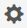
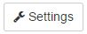

Managing backups with NetApp SaaS Backup for Office 365 Edit on GitHub
After you have completed the setup process for NetApp SaaS Backup (formerly named "NetApp Cloud Control), you can use SaaS Backup for Office 365 to manage backups of Microsoft Exchange Online, Microsoft OneDrive for Business, and Microsoft SharePoint Online.
Supported templates for Microsoft SharePoint Online
Only the following templates are supported for Microsoft SharePoint Online backups.
-
STS#0 (Team Site)
-
BLOG#0 (Blog Site)
-
DEV#0 (Developer Site)
-
PROJECTSITE#0 (Project Site)
-
COMMUNITY#0 (Community Site)
-
BDR#0 (Document Center)
-
COMMUNITYPORTAL#0 (Community Portal)
-
ENTERWIKI#0 (Enterprise WIKI)
-
EHS#1 (Root site)
-
EHS#0 (Root site)
-
SITEPAGEPUBLISHING#0 (Communication site)
-
GROUP (Group site collection prefix)
Backup policies
SaaS Backup for Office 365 has three predefined tiers of backup policies. These policy tiers vary in backup frequency and data retention period, depending upon whether you are using SaaS Backup provided storage or BYOS.
You can move data between the three policies, but you cannot create new policies or change the parameters of the predefined tiers.
Backup policies for SaaS Backup provided storage
| Backup policy | Backup frequency | Data retention period |
|---|---|---|
Tier 1 |
Once every 12 hours |
365 days |
Tier 2 |
Once every 18 hours |
365 days |
Tier 3 |
Once every 24 hours |
365 days |
Backup policies for BYOS
| Backup policy | Backup frequency | Data retention period |
|---|---|---|
Tier 1 |
Once every 12 hours |
Unlimited |
Tier 2 |
Once every 18 hours |
Unlimited |
Tier 3 |
Once every 24 hours |
Unlimited |
Backup policies with an Active status are policies to which items have been assigned for backup. Backup policies with an Inactive status do not have items assigned for backup.
Changing backup policies
If you want to change the backup frequency of your data, you can assign the data to a different backup policy tier.
-
From the Dashboard, select the service that you want to change.
-
Click view next to the number of protected mailboxes, MySites, sites, or groups.
-
Select the items for which you want to change the backup policy.
-
Click the Groups menu.

-
Select the new policy tier for the backup.
Note: Only the tier 3 policy is available for Microsoft Office 365 groups. -
Click Apply.
Updating backup settings
You can update your backup settings to control various backup options. Available backup settings vary based on service.
| Backup setting | Description | Enabled | Available in… |
|---|---|---|---|
Auto Sync |
Enables the automatic scheduled synchronization of newly added or deleted users, OneDrives, or site collections once every 24 hours. |
By default |
Microsoft Exchange Online |
Enable Restore of Recoverable Items |
Enables the user to restore Microsoft Exchange recoverable items |
Manually |
Microsoft Exchange Online |
Enable Backup of Recoverable Items |
Enables the backup of Microsoft Exchange recoverable items. Only the tier 1 backup policy allows for the backup of recoverable items. |
Manually |
Microsoft Exchange Online |
Include Workflows |
Includes workflows in the backup |
Manually |
Microsoft SharePoint Online |
Include List Views |
Includes view of list in backup |
Manually |
Microsoft SharePoint Online |
Include Version History |
Enables maintenance of multiple file versions in the backup. |
By default |
Microsoft SharePoint Online |
Number of Versions |
Sets the number of backup file versions to maintain. |
Set to 20 by default |
Microsoft SharePoint Online |
-
Click Services from the left navigation pane.
-
Click the Microsoft Office 365 settings icon.
 -
Click Settings next to the service that you need to update.

A list of your backup settings available for the selected service is displayed. -
Select the desired backup settings.
-
Click Confirm.
Performing an immediate backup of a service
As needed, you can perform an immediate backup of any Microsoft Office 365 service.
-
From the Dashboard, select the service for which you want to perform an immediate backup.
-
Click view next to the number of protected mailboxes, MySites, sites, or groups.
-
Select the items that you want to back up.
-
Click Backup Now.

A message is displayed indicating that the selected services will be placed in the job queue for immediate backup. -
Click Confirm.
A message is displayed indicating that the backup job was created. -
Click View the job progress to monitor the progress of the backup.
Canceling a job
If you have initiated an immediate backup or an immediate restore but need to cancel it before it is completed, you can do so.
-
Click Jobs from the left navigation pane.

-
Select the Most Recent tab.
-
Under Recent Running Jobs, click the job that you want to cancel.
-
Click Cancel.
The progress of the cancelled job is displayed under Recent Completed Jobs.